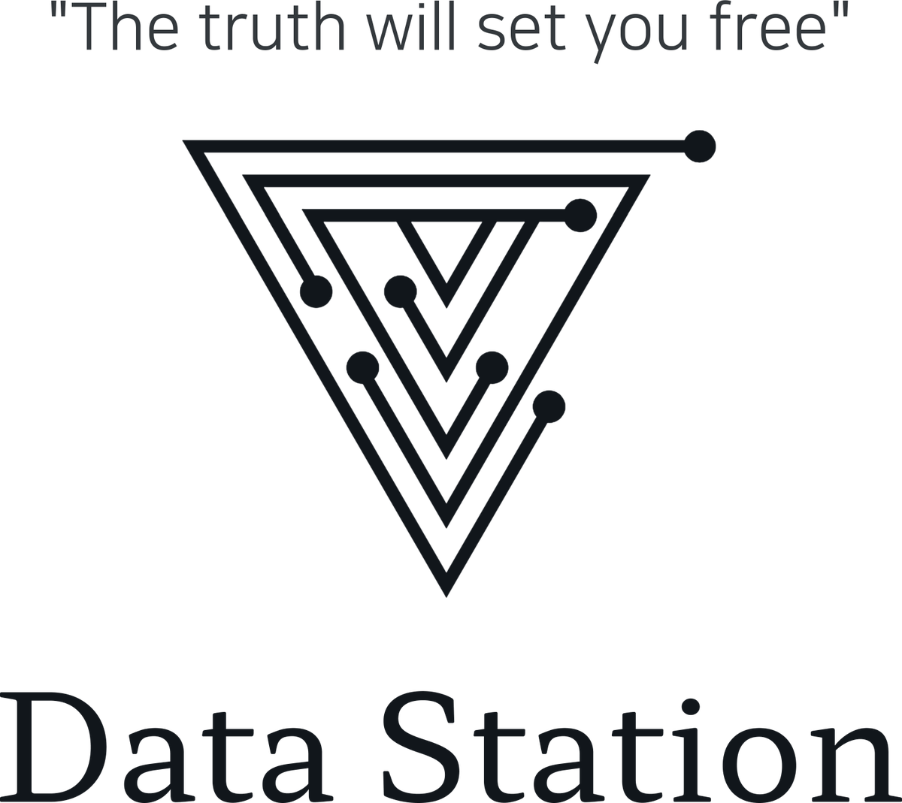

About
데이터는 사실을 말하고, 사실은 더 나은 결정을 만듭니다.
데이터 스테이션은 데이터 분석·AI 교육과 컨설팅을 하는 회사입니다. 제조·금융·의료·공공·국방 현장에서 쌓은 분석 경험을 교육 과정으로 옮기고, 교육 현장에서 다듬은 방법론을 다시 컨설팅에 적용합니다.
2018
기업·기관 출강 시작
50+
출강 과정 (기업·공공·대학)
18
컨설팅·서비스 기획 프로젝트
4
국제 학술 논문
Our motto


추측이 아니라 데이터로 확인한 사실이 조직을 더 자유롭게 움직이게 한다고 믿습니다. 그래서 우리는 화려한 모델보다 정확한 문제 정의와 정직한 해석을 먼저 가르칩니다.
Consulting
데이터 분석 컨설팅
품질 개선·공정 최적화, 수요·수주 예측, 고객 타겟 마케팅·추천, 의료 데이터, 입시·국방·정책 분석
Service
서비스 기획·개발
업무 자동화 서비스, AI 기능 개발, 데이터 대시보드 구축, 에듀테크 서비스 기획
Education
데이터·AI 교육
기업·공공기관·병원·대학 대상 프로젝트 중심 직무 교육과 KDT 과정 설계·운영
Stack
보유 기술
Python · R · SQL · JMP · TensorFlow/Keras · Hugging Face · 생성형 AI 도구
History
대표 컨설턴트 이력
데이터 분석 강의와 기업 컨설팅을 함께 해 온 경력이 데이터 스테이션의 바탕입니다.
- 2023 — 현재Data Station 대표데이터 분석 교육, 컨설팅, AI 서비스 개발
- 2022 — 현재㈜슈퍼스쿨 AI 연구소 총괄 · 이사에듀테크 서비스 기획과 데이터·AI 기능 개발
- 2018 — 2024POSCO 인재창조원 데이터 혁신그룹 자문교수청년 AI·Big Data 아카데미 프로젝트 과정 겸임교수
- 2017 — 2023㈜이노밸류파트너즈 수석데이터 분석 강의와 기업 컨설팅
- PartnerSAS JMP Korea 공식 Training PartnerJMP 기반 통계·품질 분석 교육
- InstructorNCS 인공지능 분야 검증 강사K-디지털 트레이닝 등 직업훈련 과정 강의
- Education고려대학교 빅데이터융합학과 석사명지대학교 물리학과 학사
- Channel유튜브 ‘데이터 스테이션’ 채널 운영클래스101 · 데이터 사이언스 캠퍼스 온라인 강의
- 2026방산 통신 기업 · 통신 장비 데이터 기반 전술상황인식 대시보드 기획국방·통신
- 2026군 교육기관 · 생도 맞춤형 교육 홈페이지·LMS 서비스 기획국방·교육
- 2026웹툰 CP사 · 작가·작품 관리 데이터 대시보드 개발 및 PD 데이터 컨설팅콘텐츠
- 2026에듀테크 기업 · 등하교 안전 서비스 기획에듀테크
- 2026에듀테크 기업 · 교사 진로·진학 상담 대시보드 서비스 기획에듀테크
- 2025에듀테크 기업 · 학생 활동·성적 기반 진로·진학 추천 서비스 기획에듀테크
- 2024금융 거래 정보 분석을 통한 모의 군사 작전 계획 수립 프로젝트국방·정보
- 2024전장 상황에서의 군 통신 장비 데이터 분석 및 시스템 구축 컨설팅국방·통신
- 2022학교 행정업무·학생관리 서비스 애플리케이션 개발 컨설팅에듀테크
- 2021반도체 부품 제조사 · JSL & Python 업무자동화 파이프라인 구축제조
- 2021국방·안보 관련 대군 신뢰도 기사 자동 분석 시스템국방·NLP
- 2020척추 전문 병원 · 영상 데이터 분석 및 수술 후 재발 환자 예측 모형 구축의료
- 2020스타트업 솔루션 컨설팅·자문스타트업
- 2019석유화학 기업 · EVA 품질 공정 데이터 최적화제조
- 2019소셜커머스 재고관리 시스템 업무 자동화 프로세스유통
- 2019아트펀드 경매 데이터 수집 프로그램 설계금융
- 2019헬스케어 스타트업 솔루션 컨설팅헬스케어
- 2019대학병원 · 유전 정보 데이터 분석 논문 컨설팅의료
Research
논문
- 2023.09Establishment of data mining-based public education administrative work automation system and student activity analysis · JSMSEdTech
- 2020.08A study on the optimization of semiconductor operating conditions and yield improvement using data mining techniquesManufacturing
- 2020.06Validation of simultaneous separation of 19 phenolics in green tea and processed green tea using HPLC-UV coupled with an ESI single quadrupole MS detector · MDPIBio
- 2020.03Deep Learning Artificial Neural Network Retail Mart Excellent Customer Prediction Study · ISSN 0193-4120Retail
Certifications
자격과 훈련
Data & AI
데이터 분석 자격
- NCS 인공지능·IT 개발 분야 검증 강사
- Certified Data Analyst using Python Level 3 Master
- CDAP Python 활용 데이터 분석 전문가 Level 2 ML Expert
- CDAJ JMP Big Data Analyst Level 3 Master
- CDAJ JMP Big Data Analyst Level 2 Expert
Tactical
전술·현장 훈련
- Field Operator Course Lv1–2 · 지상전 현장작전요원 과정
- CQB Detail Course Lv1–3 · 근접 전투 과정
- Tactical Medicine Hybrid · SOMS 전술의학 과정
- 정밀 · 권총 · 카빈/기관단총 사격술 기본·고급 과정
- IPSC Live Fire · Handgun Safety Course
경험을 우리 조직의 역량으로
교육과 컨설팅 모두, 조직의 문제와 데이터에서 출발합니다.